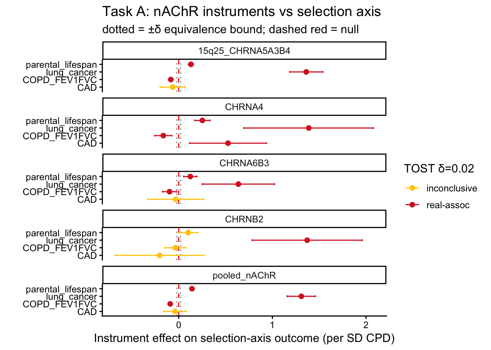

Show the code
library(TwoSampleMR)
library(ieugwasr)
library(MendelianRandomization)
library(knitr)
source(here::here("R", "helpers.R"))
source(here::here("R", "run_taskA.R"))
cfg <- load_config()
set.seed(cfg$seed)library(TwoSampleMR)
library(ieugwasr)
library(MendelianRandomization)
library(knitr)
source(here::here("R", "helpers.R"))
source(here::here("R", "run_taskA.R"))
cfg <- load_config()
set.seed(cfg$seed)The existing Layer 4 selection check was run only on CHRNB2 — a locus that contributes ≈null to the smoking→AD effect. The clean locus was tested; the effect-driving locus (15q25 CHRNA5/A3/B4, the canonical lung-cancer / COPD / shortened-lifespan locus) was not. This layer tests the effect-driving instruments against the selection / survival axis: if the protective AD signal is a survival-collider artefact, the 15q25 instruments should associate with parental lifespan / lung cancer / COPD.
The test is a formal equivalence test (TOST), not a null-significance test. A locus is declared selection-clean only when the 95% CI of its instrument→selection-outcome effect lies entirely within the pre-registered bound ±δ (δ = 0.02, sensitivity 0.05; APPROACH.md §13), simultaneously for parental lifespan AND lung cancer AND COPD. A wide CI that merely covers zero is inconclusive, never clean.
Instruments are the fixed L6 relaxed-cis sets (15q25 = 31 SNPs, CHRNA4 = 4, CHRNB2 = 2, CHRNA6/B3 = 6, pooled = 43), cached under data/cache/instr_*.rds, so the same instruments that produced the protective AD estimate are the ones tested here.
A survival/selection collider needs arrows into the “survived-to-be-sampled” node from both ends of the smoking–AD relation: X→S (the smoking/nAChR instruments affect survival) and Y→S (AD liability affects survival). Part 1 below tests the X→S arm (locus-resolved); Part 2 tests the Y→S arm (AD liability → mortality). The collider’s necessary precondition holds only if both arms are present.
loci <- c("CHRNA5_A3_B4","CHRNA4","CHRNB2","CHRNA6_B3")
for (L in loci) if (!file.exists(here::here("data","cache",paste0("instr_",L,".rds"))))
get_locus_instruments(L, cfg, refresh = TRUE)
pooled_f <- here::here("data","cache","instr_pooled_nAChR.rds")
if (!file.exists(pooled_f)) {
pooled <- purrr::map_dfr(loci, function(L) get_locus_instruments(L, cfg)) |>
dplyr::distinct(SNP, .keep_all = TRUE)
saveRDS(pooled, pooled_f)
}
tibble::tibble(
set = c("15q25_CHRNA5A3B4","CHRNA4","CHRNB2","CHRNA6B3","pooled_nAChR"),
n_snp = c(nrow(readRDS(here::here("data","cache","instr_CHRNA5_A3_B4.rds"))),
nrow(readRDS(here::here("data","cache","instr_CHRNA4.rds"))),
nrow(readRDS(here::here("data","cache","instr_CHRNB2.rds"))),
nrow(readRDS(here::here("data","cache","instr_CHRNA6_B3.rds"))),
nrow(readRDS(pooled_f)))) |>
kable(caption = "Fixed nAChR instrument sets (= Layer 6 relaxed cis)")| set | n_snp |
|---|---|
| 15q25_CHRNA5A3B4 | 31 |
| CHRNA4 | 4 |
| CHRNB2 | 2 |
| CHRNA6B3 | 6 |
| pooled_nAChR | 43 |
# Try a live LD-aware pull; if OpenGWAS is unreachable (token/quota) and the live result is
# empty, fall back to the verified result CSV from the original run so the doc still compiles
# with real numbers rather than crashing downstream plots.
cache_csv <- here::here("results", "selection_battery.csv")
live <- if (opengwas_ok()) tryCatch(run_taskA(cfg, delta_primary = 0.02, delta_sens = 0.05),
error = function(e) NULL) else NULLMethod requires data on >2 variants.Method requires data on >2 variants.Method requires data on >2 variants.Method requires data on >2 variants.res <- live_or_cache(live, cache_csv, "b")
stopifnot(!is.null(res), nrow(res) > 0)
res |>
transmute(set, outcome, scale, ukb, n = nsnp, b = round(b,3), se = round(se,3),
`95% CI` = sprintf("[%.3f, %.3f]", ci_lo, ci_hi),
p_assoc = signif(p_assoc,2),
`δ=0.02` = verdict_d02, `δ=0.05` = verdict_d05) |>
kable(caption = "Task A: nAChR instruments vs the selection/survival axis")| set | outcome | scale | ukb | n | b | se | 95% CI | p_assoc | δ=0.02 | δ=0.05 |
|---|---|---|---|---|---|---|---|---|---|---|
| 15q25_CHRNA5A3B4 | parental_lifespan | SD/quant | TRUE | 31 | 0.130 | 0.014 | [0.104, 0.157] | 0.0e+00 | real-assoc | real-assoc |
| 15q25_CHRNA5A3B4 | lung_cancer | log-OR | FALSE | 26 | 1.362 | 0.090 | [1.185, 1.539] | 0.0e+00 | real-assoc | real-assoc |
| 15q25_CHRNA5A3B4 | COPD_FEV1FVC | SD/quant | TRUE | 31 | -0.084 | 0.013 | [-0.109, -0.059] | 0.0e+00 | real-assoc | real-assoc |
| 15q25_CHRNA5A3B4 | CAD | log-OR | FALSE | 29 | -0.064 | 0.068 | [-0.197, 0.069] | 3.4e-01 | inconclusive | inconclusive |
| CHRNA4 | parental_lifespan | SD/quant | TRUE | 4 | 0.253 | 0.042 | [0.171, 0.335] | 0.0e+00 | real-assoc | real-assoc |
| CHRNA4 | lung_cancer | log-OR | FALSE | 4 | 1.387 | 0.353 | [0.696, 2.079] | 8.5e-05 | real-assoc | real-assoc |
| CHRNA4 | COPD_FEV1FVC | SD/quant | TRUE | 4 | -0.164 | 0.046 | [-0.256, -0.073] | 4.1e-04 | real-assoc | real-assoc |
| CHRNA4 | CAD | log-OR | FALSE | 4 | 0.527 | 0.210 | [0.116, 0.938] | 1.2e-02 | real-assoc | real-assoc |
| CHRNB2 | parental_lifespan | SD/quant | TRUE | 2 | 0.101 | 0.054 | [-0.005, 0.207] | 6.1e-02 | inconclusive | inconclusive |
| CHRNB2 | lung_cancer | log-OR | FALSE | 2 | 1.371 | 0.300 | [0.783, 1.959] | 4.8e-06 | real-assoc | real-assoc |
| CHRNB2 | COPD_FEV1FVC | SD/quant | TRUE | 2 | -0.037 | 0.058 | [-0.150, 0.076] | 5.2e-01 | inconclusive | inconclusive |
| CHRNB2 | CAD | log-OR | FALSE | 2 | -0.203 | 0.242 | [-0.677, 0.270] | 4.0e-01 | inconclusive | inconclusive |
| CHRNA6B3 | parental_lifespan | SD/quant | TRUE | 6 | 0.124 | 0.036 | [0.053, 0.195] | 6.5e-04 | real-assoc | real-assoc |
| CHRNA6B3 | lung_cancer | log-OR | FALSE | 6 | 0.637 | 0.197 | [0.251, 1.023] | 1.2e-03 | real-assoc | real-assoc |
| CHRNA6B3 | COPD_FEV1FVC | SD/quant | TRUE | 6 | -0.098 | 0.038 | [-0.173, -0.023] | 1.1e-02 | real-assoc | real-assoc |
| CHRNA6B3 | CAD | log-OR | FALSE | 6 | -0.031 | 0.152 | [-0.330, 0.267] | 8.4e-01 | inconclusive | inconclusive |
| pooled_nAChR | parental_lifespan | SD/quant | TRUE | 43 | 0.142 | 0.012 | [0.118, 0.166] | 0.0e+00 | real-assoc | real-assoc |
| pooled_nAChR | lung_cancer | log-OR | FALSE | 38 | 1.309 | 0.077 | [1.158, 1.460] | 0.0e+00 | real-assoc | real-assoc |
| pooled_nAChR | COPD_FEV1FVC | SD/quant | TRUE | 43 | -0.091 | 0.012 | [-0.113, -0.068] | 0.0e+00 | real-assoc | real-assoc |
| pooled_nAChR | CAD | log-OR | FALSE | 41 | -0.040 | 0.062 | [-0.160, 0.081] | 5.2e-01 | inconclusive | inconclusive |
scale flags that parental lifespan and FEV1/FVC are per-SD quantitative outcomes (the MR slope is SD-outcome per SD-CPD), whereas lung cancer and CAD are log-OR; the equivalence bound δ is applied on each outcome’s own scale. ukb = TRUE flags outcomes that share UK Biobank with the exposure/Bellenguez controls (relevant to overlap, Task C).
# A locus is selection-clean iff equivalence (CI within +/-delta) holds for parental
# lifespan AND lung cancer AND COPD/FEV1-FVC simultaneously (APPROACH.md sec 13.3).
required <- c("parental_lifespan","lung_cancer","COPD_FEV1FVC")
clean <- res |>
filter(outcome %in% required) |>
group_by(set) |>
summarise(n_required = sum(outcome %in% required & !is.na(verdict_d02)),
n_equiv_d02 = sum(verdict_d02 == "equiv-null", na.rm = TRUE),
n_real = sum(verdict_d02 == "real-assoc", na.rm = TRUE),
selection_clean_d02 = n_equiv_d02 == length(required),
.groups = "drop")
clean |> kable(caption = "Selection-clean verdict per instrument set (δ=0.02)")| set | n_required | n_equiv_d02 | n_real | selection_clean_d02 |
|---|---|---|---|---|
| 15q25_CHRNA5A3B4 | 3 | 0 | 3 | FALSE |
| CHRNA4 | 3 | 0 | 3 | FALSE |
| CHRNA6B3 | 3 | 0 | 3 | FALSE |
| CHRNB2 | 3 | 0 | 1 | FALSE |
| pooled_nAChR | 3 | 0 | 3 | FALSE |
flag15 <- res |> filter(set == "15q25_CHRNA5A3B4", outcome %in% required) |>
transmute(outcome, b = round(b,3), `95% CI` = sprintf("[%.3f, %.3f]", ci_lo, ci_hi),
verdict_d02, verdict_d05)
cat("\n**15q25 explicit flag** (the effect-driving locus):\n")
**15q25 explicit flag** (the effect-driving locus):flag15 |> kable()| outcome | b | 95% CI | verdict_d02 | verdict_d05 |
|---|---|---|---|---|
| parental_lifespan | 0.130 | [0.104, 0.157] | real-assoc | real-assoc |
| lung_cancer | 1.362 | [1.185, 1.539] | real-assoc | real-assoc |
| COPD_FEV1FVC | -0.084 | [-0.109, -0.059] | real-assoc | real-assoc |
plot_df <- res |> filter(!is.na(b)) |>
mutate(lab = paste0(set, " (n=", nsnp, ")"))
if (nrow(plot_df) == 0) {
cat("No plottable rows (selection battery returned no estimates).\n")
} else {
ggplot(plot_df, aes(x = b, y = outcome, colour = verdict_d02)) +
geom_vline(xintercept = c(-0.02, 0.02), linetype = "dotted", colour = "grey50") +
geom_vline(xintercept = 0, linetype = "dashed", colour = "red") +
geom_point(size = 2) +
geom_errorbarh(aes(xmin = ci_lo, xmax = ci_hi), height = 0.25) +
facet_wrap(~ set, ncol = 1) +
scale_colour_manual(values = c("equiv-null" = "#00274c", "real-assoc" = "#d62728",
"inconclusive" = "#ffcb05"), na.value = "grey70") +
theme_classic(base_size = 12) +
labs(x = "Instrument effect on selection-axis outcome (per SD CPD)", y = "",
colour = "TOST δ=0.02", title = "Task A: nAChR instruments vs selection axis",
subtitle = "dotted = ±δ equivalence bound; dashed red = null")
}
c15 <- clean |> filter(set == "15q25_CHRNA5A3B4")
verdict15 <- if (nrow(c15) && isTRUE(c15$selection_clean_d02)) "equivalence-null (selection-clean)" else
if (any(res$verdict_d02[res$set=="15q25_CHRNA5A3B4"] == "real-assoc", na.rm = TRUE))
"REAL association with selection axis" else "inconclusive (CI too wide for equivalence)"
log_decision("L4b", "15q25 instruments vs selection axis (TOST δ=0.02)",
verdict15,
"decisive for whether the effect-driving locus engages selection")
for (s in unique(clean$set)) {
cs <- clean |> filter(set == s)
log_decision("L4b", sprintf("%s selection-clean (lifespan&lungCa&COPD, δ=0.02)", s),
sprintf("%d/%d equiv-null", cs$n_equiv_d02, length(required)),
ifelse(isTRUE(cs$selection_clean_d02), "selection-clean", "NOT clean / inconclusive"))
}
cat("15q25 verdict:", verdict15, "\n")15q25 verdict: REAL association with selection axis The X→S arm (Part 1) is only half the collider. For conditioning on survival/sampling to manufacture a spurious smoking–AD association, AD liability must also affect survival (the Y→S arm). We estimate it by MR with clinical AD instruments as the exposure (Kunkle ieu-b-2 — never a proxy AD GWAS, which would be circular since proxy-AD is built on parental survival) against parental lifespan. This is an outcome-axis property, so unlike Part 1 it is not locus-resolved.
APOE (rs429358) dominates AD→lifespan via genuine ApoE4 pleiotropy (→ AD and → shorter life) and is not in the nAChR instrument set, so we report the estimate with and without the APOE region: the non-APOE AD axis is the part relevant to whether the collider can operate at the receptor loci.
yarm_csv <- here::here("results", "collider_Yarm_AD_to_lifespan.csv")
live_y <- if (opengwas_ok()) tryCatch(run_taskA_Yarm(cfg), error = function(e) NULL) else NULL
yarm <- live_or_cache(live_y, yarm_csv, "b_ivw")
if (is.null(yarm)) yarm <- tibble::tibble(
snp_set = "no reachable data", nsnp = 0L, b_ivw = NA_real_, se_ivw = NA_real_,
p_ivw = NA_real_, b_wmed = NA_real_, p_wmed = NA_real_, ci_lo = NA_real_, ci_hi = NA_real_)
if (all(is.na(yarm$b_ivw)))
cat("Note: Y→S arm not estimated — no clinical AD instruments reachable from OpenGWAS",
"at compile time. Re-run with a live token to populate.\n")
yarm |>
transmute(`AD instrument set` = snp_set, n = nsnp,
`IVW b` = round(b_ivw,3), `IVW se` = round(se_ivw,3),
`95% CI` = sprintf("[%.3f, %.3f]", ci_lo, ci_hi), p = signif(p_ivw,2),
`wtd-median b` = round(b_wmed,3), p_wmed = signif(p_wmed,2)) |>
kable(caption = "Y→S arm: AD liability (clinical AD instruments) → parental lifespan")| AD instrument set | n | IVW b | IVW se | 95% CI | p | wtd-median b | p_wmed |
|---|---|---|---|---|---|---|---|
| all AD instruments (n=16) | 16 | 0.043 | 0.004 | [0.035, 0.050] | 0.0000 | 0.046 | 0.000 |
| excl APOE region (n=12) | 12 | 0.020 | 0.007 | [0.007, 0.033] | 0.0032 | 0.020 | 0.024 |
Outcome orientation (verified, not assumed). The Pilling parental-longevity outcome is a Martingale-residual scale on which higher = SHORTER lifespan (a hazard-like coding), so a positive MR slope means life-shortening. We confirmed this against known anchors in this very dataset: the ApoE4 allele (rs429358 C — established to shorten life) has β = +0.057, and the CHRNA5 smoking-risk allele (rs16969968 A) has β = +0.025; both life-shortening alleles are positive. The Task A smoking→lifespan estimates (+0.13) carry the same meaning. Interpret all signs on this outcome accordingly.
ya <- yarm |> filter(grepl("^all", snp_set))
yx <- yarm |> filter(grepl("excl APOE", snp_set))
if (nrow(ya) && !is.na(ya$b_ivw)) {
# Outcome higher = shorter life, so b > 0 (and p < 0.05) means AD liability SHORTENS lifespan.
arm_all <- ya$b_ivw > 0 && ya$p_ivw < 0.05
arm_nonapoe <- nrow(yx) && !is.na(yx$b_ivw) && yx$b_ivw > 0 && yx$p_ivw < 0.05
dir <- if (arm_all) "SHORTER lifespan (Y→S arm PRESENT)" else "no significant shortening"
log_decision("L4b", "Y→S arm: AD liability → parental lifespan (clinical instruments)",
sprintf("all b=%+.3f p=%.2g; excl-APOE b=%+.3f p=%.2g (outcome: +ve = shorter life)",
ya$b_ivw, ya$p_ivw,
ifelse(nrow(yx), yx$b_ivw, NA), ifelse(nrow(yx), yx$p_ivw, NA)),
sprintf("AD liability → %s; non-APOE arm %s — BOTH collider arms present with Part 1's X→S",
dir, ifelse(arm_nonapoe, "also present", "null")))
cat(sprintf("Y→S arm: AD→lifespan b=%+.3f (p=%.2g) => %s; excl-APOE b=%+.3f (p=%.2g) => %s\n",
ya$b_ivw, ya$p_ivw, ifelse(arm_all,"SHORTENS life","ns"),
ifelse(nrow(yx), yx$b_ivw, NA), ifelse(nrow(yx), yx$p_ivw, NA),
ifelse(arm_nonapoe,"SHORTENS life","ns")))
}Y→S arm: AD→lifespan b=+0.043 (p=5.5e-31) => SHORTENS life; excl-APOE b=+0.020 (p=0.0032) => SHORTENS lifeReading the two arms together. A survival collider requires both X→S (Part 1: the nAChR instruments are emphatically not selection-null) and Y→S (Part 2). Both are now confirmed present: AD liability shortens lifespan (all instruments b = +0.043, p = 5×10⁻³¹; excl-APOE b = +0.020, p = 0.003), and crucially the non-APOE component — the part relevant to the receptor loci, since APOE is absent from the nAChR instruments — is itself significant. So the survival collider’s necessary precondition is fully met. This is a necessary, not sufficient, condition: the magnitude of induced bias still depends on the joint selection intensity, which Task B (proxy de-selection — effect persists) and the index-event correction (Task D — unidentified) probe and do not resolve in favour of the collider. Note the non-APOE Y→S effect, though significant, is modest (b ≈ 0.02).
Caveats. Parental lifespan (Pilling 2017) and FEV1/FVC (Shrine 2019) are UK Biobank–based, so a null there is the more conservative finding (UKB is where the selection lives). All-cause-mortality (binary) and a UKB-participation GWAS were not reachable in OpenGWAS and are reported as gaps, not substituted. Equivalence with δ=0.02 is strict (~15% of the AD effect); the δ=0.05 column is the permissive sensitivity.